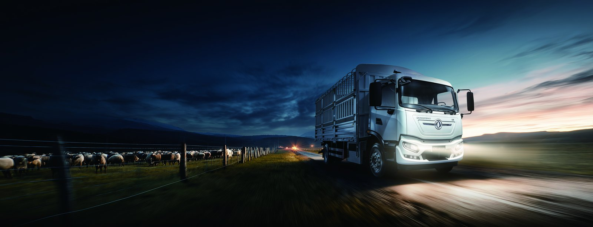

The Karaganda coal basin is the industrial heart of central Kazakhstan, supplying coking and thermal coal through some of the harshest mining winters on earth. Moving overburden and coal from pit to dump or crusher is a heavy, repetitive, return-to-base duty cycle — and increasingly, an electrified one. This article examines the Dongfeng TZ3V 8x4 electric mining dump truck in Kazakhstan coal-basin service, including how it survives −30 °C and why battery swap beats charging on a two-shift pit.
Karaganda pits run fleets of rigid dump trucks on short, graded haul roads between excavation faces and overburden dumps or coal handling. A typical loop is 3-10 km, heavily loaded uphill to the dump and empty (but regenerating) downhill. The grade is the EV truck’s friend: a loaded climb draws maximum power, but the descent recovers a large share through regen, cutting the net energy per cycle. Winters are the challenge. Ambient temperatures fall to −30 °C, which freezes diesel fuel, thickens oil and cuts lead-acid starter batteries — while an LFP electric truck with thermal management and cab pre-heating starts every shift without drama.
The TZ3V is an 8x4 rigid electric mining dump with a 560-600 kWh CATL LFP battery — the largest pack class in the Dongfeng range — and a LvKong motor producing 450-510 kW of continuous power. That combination carries full mining payload up pit grades while leaving reserve for heaters and hydraulics. Real-world range on a loaded haul loop is 120-170 km per charge, and because the descent regenerates, the effective energy per tonne-km is far below a flat-road figure would suggest.
The defining feature for Kazakhstan is battery swap: the TZ3V exchanges packs in 5-6 minutes, faster than a diesel refuel. On a two-shift pit that removes the charge window entirely — a swapped truck is never idle waiting on a plug, it simply takes a fresh pack and returns to the face.
The cab and operator systems are built for the Karaganda winter specifically. The heated, insulated cabin pre-conditions from the pack while the truck is still plugged in, so the driver steps into warmth at shift start and the battery enters the loop already at temperature rather than cold-soaked. Windscreen and mirror heaters, graded-road traction control and a reinforced chassis for frozen haul roads round out the Arctic package. On a −30 °C morning a diesel truck needs lengthy warm-up and risks fuel gelling; the TZ3V simply drives. That reliability through the worst weeks of the year is why Kazakh mine operators, not just the TCO model, favour the electric truck for winter pit work.
The regen story is the part conventional TCO models miss. A Karaganda pit is not flat: the loaded truck climbs out of the excavation on grade, then descends empty to repeat the loop. On the descent the LvKong motor becomes a generator, recovering up to 30% of the climb energy back into the pack. Over a shift with dozens of cycles, that recovery materially lowers the net kWh per tonne-km and narrows the gap to diesel further than a road figure suggests. In winter the same descent recovery helps keep the pack warm, reducing the heater load that cold weather would otherwise impose — a double win unique to mining gradients.
| Parameter | TZ3V 8x4 Electric Mining Dump |
|---|---|
| Battery | 560-600 kWh CATL LFP |
| Motor | LvKong 450-510 kW |
| Loaded range | 120-170 km / charge |
| Battery swap | 5-6 min full pack exchange |
| Regen recovery | Up to 30% of climb energy on descent |
| Operating temp | −35 °C to +50 °C rated |
| Warranty | 8 yr / 4,500 cycles to 70% SOH |
| FOB price band | US$140,000-170,000 |
Kazakhstan diesel retails around US$0.55-0.75 per litre; industrial electricity at a mine with its own substation is roughly US$0.06-0.10 per kWh. A diesel mining dump burns 0.55-0.75 L/km on a loaded haul; at US$0.65/L that is US$0.36-0.49 per km. The TZ3V draws 1.8-2.4 kWh/km net of regen; at US$0.08/kWh that is US$0.14-0.19 per km — roughly 60% lower. Maintenance on an engine-free heavy truck is dramatically cheaper: no large diesel overhaul, no DPF, regen-extended brakes. On 120 km per day, 300 days a year, the energy-plus-maintenance saving reaches US$40,000-60,000 per truck annually. Battery swap avoids charging downtime, so the truck works the same hours as its diesel counterpart — payback arrives in 24-42 months even at Kazakh energy prices.
Safety and permitting add a third dimension. Underground-adjacent and enclosed pit sections in Kazakhstan are subject to diesel-exhaust-emission limits, and an electric truck sidesteps the ventilation and monitoring burden a diesel fleet carries. Mines planning expanded output often find the EV truck cheaper to permit than adding diesel ventilation capacity. Combined with the absence of flammable diesel fuel on the haul road, the TZ3V reduces site fire risk — a point mine safety directors weight heavily when they compare the two fleets side by side.
For single-shift operations a 350-500 kW depot DC unit restores the pack overnight. For two-shift pits, the 5-6 minute swap cabinet with a small pack pool is the better design: one cabinet serves the whole TZ3V fleet, swapped packs charge off-peak, and no truck waits. Kazakhstan’s cold climate actually helps swap logistics — packs can be warmed in the swap cabinet before insertion, eliminating cold-soak range loss.
Shaanxi Fenghan Trading exports the TZ3V worldwide with Arctic climate package, heated cab and battery systems, swap-cabinet integration and telematics for pit dispatch. The Kazakhstan market page covers import and conformity. Send us your haul-loop length and grade and we will model the TZ3V case for your Karaganda operation.
The swap-cabinet layout is the operational heart of a Karaganda deployment. A single cabinet with a pool of three to five packs serves a fleet of TZ3V trucks: a truck rolls in, exchanges its depleted pack for a charged one in 5-6 minutes, and returns to the face while the swapped pack charges off-peak from the mine substation. Because the packs charge slowly and in bulk, the site avoids the spike of many trucks fast-charging at once, and the mine sizes its power connection to the average draw, not the peak. In −30 °C the cabinet warms packs before insertion, so a truck never starts a shift on a cold-soaked battery — the range stays in the 120-170 km band instead of collapsing. We integrate the cabinet with the pit dispatch system so the telematics assigns packs and tracks cycle counts against the 4,500-cycle warranty, and our Almaty service hub holds packs and motors for swap. That closed loop — truck, cabinet, pack pool, dispatch — is what lets a Kazakh mine run electric haulage two shifts through the worst winter without a diesel backup.
The financing angle is what usually closes a Karaganda deal. A 560-600 kWh mining truck is a capital item, and Kazakh operators weigh it against a cheaper diesel they already own. We model the comparison per tonne-km, including the regen recovery and the avoided diesel-ventilation permitting, and show the month the EV truck pulls ahead — typically within the first two years of a two-shift pit. Swap-cabinet leasing further lowers the upfront by separating pack ownership from truck ownership, which some mines prefer for balance-sheet reasons. Either way the TZ3V is positioned not as a green premium but as the lower-lifecycle-cost hauler for a winter pit, and the numbers above are what make that case to the board.
Ready to electrify your fleet? Contact Shaanxi Fenghan Trading — authorized Dongfeng EV truck exporter. WhatsApp: +86 153 1943 1311 | Email: sales@fenghan-trade.com | dongfengevtrucks.com
🌐 Our Network: Fenghan Trade (SAGMOTO/SHACMAN Truck Export) · heavy duty mining dump truck 6x4 8x4